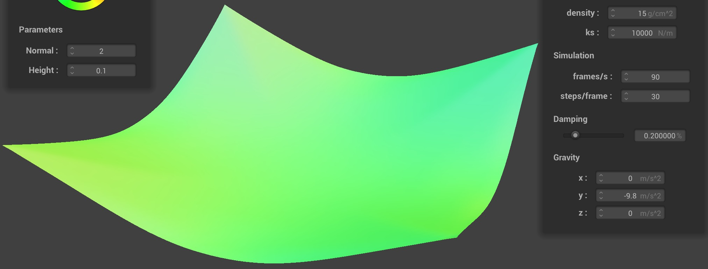
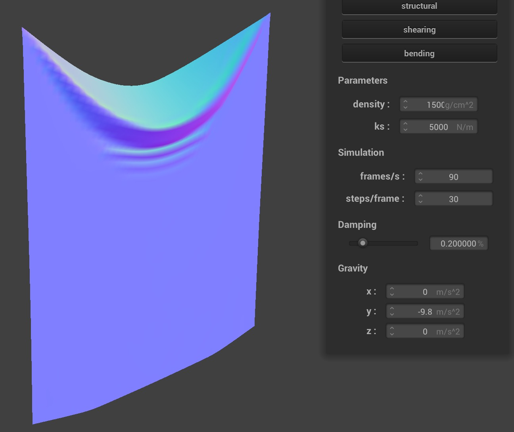
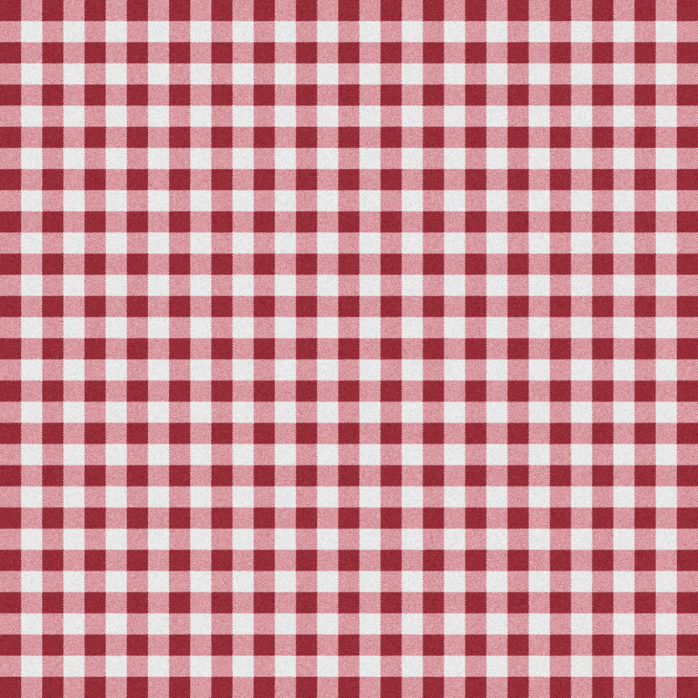
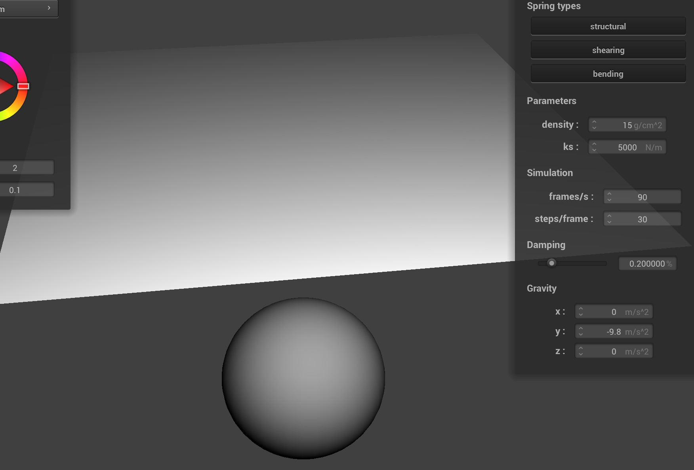

Overview
In this project, we created a spring-based cloth simulation. We created the cloth using point masses and structural, shearing, and bending springs and are able to adjust the density, spring constant as well damping. Then using this cloth, we can create more realistic scenarios by implementing physics by numeric integration and adding realistic collisions with objects such as spheres, planes, and self-collisions by making sure the point masses do not go inside the objects. Finally, we use the GLSL programming language to add shaders to our objects using the GPU to speed up shading operations. This allows us to implement Diffuse shading, Blinn-Phong shading, Texture mapping, displacement and bump mapping, and environment-mapped reflections. These are done by using the light reflection equations and calculating the out_color. For Texture mapping, displacement and bump mapping, and environment-mapped reflections, we take in readings from a texture file and translate between the object space to the texture space, and for bump mapping we add the displacements to our values to get the bumps on our object. This allows us to render our cloth objects in many different types of environments with different lightning and create realistic scenarios where the cloth is similar to the way it behaves in real life. In this project, I follow the instructions and implement a real-time cloth simulator using the mass-spring model. In Part 1, I construct a grid of point masses with springs connecting point masses into a wireframe to represent the cloth. These springs represent the internal forces of structural, shearing and bending constraints to hold on the cloth. In Part 2, I first compute the total force acting on each point mass, including all the external forces and the internal forces simulated by the springs. Then, I compute new point mass positions with Verlet integration, and constrain position updates using the method from SIGGRAPH 1995 Provot paper to make sure the spring's length is at most 10% greater than its rest_length at the end of any time step. In Part 3 and Part 4, I handle the collision of the cloth with other primitives (planes and spheres) and the self-collision problem respectively. In Part 5, I employ various GLSL shaders on the scene to enhance the visual appeal of cloth simulation, including diffuse, Blinn-Phong model, texture mapping, bumping mapping, displacement mapping and mirror shader. For extra credits, I also try adding some additional technical features to further improve your cloth simulation. I implement my own custom shader in Part 5, the spatially varying wind force, a more robust self-collisions than spatial hashing implemented with bounding volume hierachy, and other 3D primitives triangles and show that the cloth can properly collides with them.
Part I: Masses and springs
Walkthrough
In Part I, I need to construct a grid of point masses and springs between them, which is the foundation of the mass-and-spring model for cloth simulation. These point masses act as the basic elements to form the cloth structure and the model concentrates the mass nearby on these point masses to model the cloth. I arrange these point masses in a grid layout and the initial position varies slightly depending on whether the cloth is oriented horizontally or vertically. If the cloth is vertically oriented, then we will add some small random offset to the z coordinate for more realism. I store these point masses in the point_masses vector in row-major (x-axis) order (NOTE: or else the rendering will not work properly).
Then, I interconnect these point masses in the grid with springs. I add springs for structural, shearing and bending constraints, each serving a distinct purpose. Structural springs can help maintain the grid's form to hold the shape of the cloth. Shearing springs help manage diagonal stretching and compression, while bending springs counteract the cloth's tendency to bend. Since all physics properties are simulated in point masses and springs, I learned that the mass-and-spring model cannot accurately mimic the real movements of real fabrics but it can display the complex interactions of cloth with other primitives since it models the physical property in springs.
Screenshots of scene/pinned2.json
Below are some screenshots of scene/pinned2.json from a viewing angle where you can clearly see the cloth wireframe to show the structure of your point masses and springs.
|
|
|
Screenshots of Wireframe
Below are screenshots showing what the wireframe looks like (1) without any shearing constraints, (2) with only shearing constraints, and (3) with all constraints.
|
|
|
|
Part II: Simulation via Numerical Integration
Walkthrough
In Part II, I complete the basic simulation in the function Cloth::simulate.
In Part 2.1, I first compute the total forces on each point mass, including external forces and internal forces.
For external forces, we are given all the external accelerations and can compute all the external forces by applying Newton's Second Law $\vec{F} = m\vec{a}$ where $m$ is the mass of the point mass.
For internal forces (simulated by springs), we can compute the spring force with Hooke's Law $F_s = k_s \cdot (\parallel p_a - p_b \parallel - l)$, where $l$ is the rest length of the spring, $p_a, p_b$ are positions of the two point masses at each end of the spring.
Note that we can only sum up the spring forces if the constraint type of the spring is enabled during the simulation.
Then, in Part 2.2, I compute the new position of each point mass using Verlet integration, which introduces a damping coefficient $d$. The formula derived for simulation to calculate the new position after $\Delta t$ time is $x_{t+\Delta t} = x_t + (1-d)(x_t-x_{t-\Delta t}) + a_t \Delta t^2$, where $a_t$ is the acceleration of the point mass at time $t$ and can be computed from the total force on the point mass. In Part 2.3, I need to correct the position updates using the method from SIGGRAPH 1995 Provot paper to make sure the spring's length is at most 110% its rest length at the end of any time step. Note that position updates should skip all the pinned point masses.
Experiment and Observation
I experiment with some the parameters in the simulation. To do so, I pause the simulation at the start with key P, modify the values of interest, and then resume by pressing key P again. You can also restart the simulation at any time from the cloth's starting position by pressing key R.
Spring Constant ks
The screenshots below show the effects of changing the spring constant ks (unit $N/m$) from $10$ to $400000$ on scene/pinned2.json.
For very low spring constant ks = 100, the cloth moves down slowly and moves up and down with a small amplitude, then resting at a position where the cloth is stretched greatly by the gravity with multiple wrinkles.
For low spring constant ks = 1000, the cloth moves up and down repeatively (with a large amplitude) and until it takes longer time to rest at a stable position where the cloth is stretched by the gravity with one wrinkle.
For large spring constant ks = 100000, the cloth moves down quickly and stay at the rest position (lowest position) where the cloth is stretched slightly by the gravity.
For very large spring constant ks = 400000, the cloth ocillates fiercely (moves and rolls up and down) and the shape of cloth is not stable.
For super large spring constant ks = 600000, the shape of cloth breaks in a few seconds.
|
|
|
|
|
|
(ocillation) |
(shape break) |
The screenshots below show the effects of changing the spring constant ks (unit $N/m$) from $10$ to $400000$ on scene/pinned4.json.
For very low spring constant ks = 100, the cloth moves down slowly and moves up and down with a small amplitude, then resting at a position where the cloth is stretched greatly by the gravity.
For low spring constant ks = 1000, the cloth moves up and down repeatively (with a large amplitude) and until it takes longer time to rest at a stable position where the cloth is stretched by the gravity.
For large spring constant ks = 100000, the cloth moves down quickly and stay at the rest position (lowest position) where the cloth is stretched slightly by the gravity.
For very large spring constant ks = 400000, the cloth ocillates fiercely (move up and down with a small amplitude) and the shape of cloth finally breaks after a few minutes.

|
|

|
|
|
(ocillation) |
(shape break) |
Density Parameter density
The screenshots below show the effects of changing the density parameter density (unit $g/cm^2$) from $1$ to $15000$ on scene/pinned2.json.
Changing the density parameter of the cloth changes the percieved weight of the cloth.
A higher density value results in fewer wrinkles, giving the cloth a taut appearance.
For high density value, the cloth also falls a little faster due to the acceleration caused by springs are relatively smaller where the gravity acceleration is constant.
For high density value, the lowest position on the top-most edge of the cloth is much lower due to the larger mass.
Conversely, a very low density makes the cloth resemble soft and lightweight materials like taffeta linings and gauzy fabric.
For low density value, the cloth also falls a little slower due to the acceleration caused by springs are relatively larger where the gravity acceleration is constant.
For low density value, the lowest position on the top-most edge of the cloth is much higher.
|
|
|
|
|
|

|

|
Damping Parameter damping
Changing the damping of the cloth makes it change positions faster or slower. This means that for low damping values, it quickly changes positions and is more reactive. For the render with damping value of 0.01%, it moves back and forth for many, many cycles before finally settling down because it drops so quickly and the damping coefficient is too close to 0. For the render with daming value of 0.5%, it falls fast and stay at the bottom (no ocillation), since the position change is reduced. For the render with daming value of 0.9%, it falls slowly, since the position change is greatly reduced. This is because the position updates are scaled by $(1 - damping)$ value.
|
|

|
|
Screenshots of Shaded Cloth
Below are screenshots of shaded cloth from scene/pinned4.json in its final resting state. The different parameters other than the default ones are also listed below.
|
$density = 15$, $damping = 0.2$ |
$density = 15$,$damping = 0.2$ |
|
$density = 15$, $damping = 0.2$ |
$density = 15$,$damping = 0.2$ |
$density = 900$,$damping = 0.2$ |
$density = 900$,$damping = 0.2$ |
|
$density = 15$, $damping = 0.8$ |
$density = 15$,$damping = 0.8$ |
$density = 900$,$damping = 0.8$ |
$density = 900$,$damping = 0.8$ |
Part III: Handling Collisions with Other Objects
Walkthrough
In Part 3, I handle the collision of the cloth with two types of primitives in the cloth simulation: spheres and planes. In Part 3.1, I handle the collision of the cloth with spheres. First is to detect the collision between cloth and spheres by calculating the distance of each point mass from the sphere origin. If the distance is not larger than the radius of the sphere, the point mass falls inside the sphere and collision must happen. To handle the collision, the program first find the tangent point on the surface of the sphere for the current position of point mass. Then, the program calculate the vector from last postition of the point mass to the tangent point as the correction vector. The program finally update the position by adding the correction vector (scaled by $(1-friction)$) to the last position.
In Part 3.2, I handle the collision of the cloth with planes. First is to detect the collision between cloth and planes by computing whether the current position and last position of the point mass are on the same side of the plane. If two positions are not on the same side, the point mass passes through the plane and collision must happen. To handle the collision, the program first find the tangent point on the surface of the plane for the current position of point mass by projection. Then, the program add the vector from last postition of the point mass to the tangent point and a surface offset vector in the normal direction as the correction vector. The program finally update the position by adding the correction vector (scaled by $(1-friction)$) to the last position.
Screenshots of Collision with Spheres
Below are screenshots of shaded cloth from scene/sphere.json in its final resting state on the sphere using $ks = 5000$, $500$ and $50000$.
When using different $ks$ values of the cloth while colliding the sphere, the cloth has different stiffness as it wraps around the sphere.
For $ks$ from $500$ to $50000$, as the spring constant $ks$ get larger, the cloth becomes stiffer.
For the cloth with a low $ks$ value $ks = 500$, it wraps around the sphere more fully because the springs have a smaller spring constant.
For the cloth with a high $ks$ value $ks = 50000$, it has less creases as it does not wrap around the sphere that close.
|
|
|
|
Screenshots of Collision with Planes
Below are screenshots of shaded cloth lying peacefully at rest on the plane.

|
|
|
Part IV: Handling Self-collisions
Walkthrough
In Part 4, I implemented self-collisions with the data structure, spatial hashing.
Spatial hashing is advantageous as it ensures constant time complexity $O(1)$ for locating the approximate position of any point mass on the screen.
The method is particularly efficient because hash mapping accurately calculates the unique key, enhancing both precision and performance in complex simulations.
In Part 4.1, I implement the hashing to hash a 3D real position into a unique real value representing the block of its approximate position.
In Part 4.2, I build the spatial map mapping the keys (hashing values) to a vector of the pointers pointing to the point masses with the same key, i.e. their positions are in the same block.
In Part 4.3, I implement the function Cloth::self_collide to deal with self collision issues for each point mass. For a point mass, we will find all the point masses with their positions in the same block and check whether they are too close from each other.
If their positions are too close, then give the point mass a correction vector to add on its position to go away from the other point masses nearby.
Screenshots of Cloth Falling
Below are the screenshots that document how the cloth falls and folds on itself, starting with an early, initial self-collision and ending with the cloth at a more restful state in $9$ stages.
|
|

|
|
|
|
|
|
|
|
|
|
Experiment on Parameters
Below are the screenshots with different $density$ and $ks$ values. Changing the spring constant $ks$ value of the cloth, the cloth will be more or less rigid while folding on itself. With $ks=100 N/m$, the cloth folds over itself for multiple times very easily, the folds are small, and the number of folds is larger. With the $ks=10000 N/m$, the cloth is less likely to have small folds over itself and is much more rigid in having only the big folds over and the number of folds is smaller.
Changing the density of the cloth, the cloth will seem heavier. With $density = 1$, i.e. the cloth is less dense, it will fall a bit further to the ground, more slowly with less folds and creases. With $density = 150$, i.e. the cloth is more dense, it will fall closer to the ground, quicker, having more sharp folds and creases. As the cloth is more dense, the heavier mass causes it to weight down heavier on the folds below.
|
|
|
|
|
|
|
|

|
|
|
Part V: Shaders
Shader Program
A shader program is a program that takes in input properties of a point in the world and outputs a 4-dimensional color vector for a coordinate on an image. Within a shader program, there are two fundamental types that work together to produce stunning visual effects: vertex and fragment shaders. The first stage in the shading process is the vertex shader. It takes each vertex of a 3D object (defined by its coordinates, normal, color, etc.) and performs operations like transformations, and adjustment of positions and normals. This stage is responsible for determining where vertices should appear on the screen, laying the groundwork for how the object will look. The vertex shaders modify the vertices using transforms to change their normal and position vectors before rasterization. The fragment shaders process the fragments yielded by rasterization to compute a color that is outputted in out_color. These two programs work together to create lighting and material effects by running on each vertex and fragment on the image.
Blinn-Phong Shading
The Blinn-Phong shading model is a shading model used to simulate how light interacts with surfaces. The model breaks down the light into three components: ambient lighting, diffuse lighting and specular lighting. For ambient lighting, it is the basic, non-directional light present in a scene. It acts as a baseline light that ensures objects are never completely dark and doesn't depend on the light source direction or viewer's perspective. Ambient shading provides constant light that is uniform across the scene. For diffuse lighting, diffuse reflection represents the light of that scatters evenly across a surface. It depends on the angle of the light hitting the object, creating varying intensities and making the shape of the object more discernible. Diffuse shading provides light that is relative to the object to create gentle shadows. For specular lighting, it simulates the bright spots of light that appear on shiny objects. This component is highly dependent on the viewer's position and the surface's properties, like shininess.
Below are four screenshots of Blinn-Phong shading model including a screenshot of your Blinn-Phong shader outputting only the ambient component, a screen shot only outputting the diffuse component, a screen shot only outputting the specular component, and one using the entire Blinn-Phong model. With only ambient lighting on, you can see that the sphere is a uniform matte black. With only diffuse lighting on, you can see the sphere is shinier. With only specular lighting on, you can see that the sphere is nearly black with some region very bright.
|
|
|
|
|
Texture Mapping
Below are screenshots of texture mapping shader using the original texture image and my own custom texture image respectively.
|
|

|
|
|
Bumping mapping
Below are screenshots of bump mapping on the cloth and on the sphere.
|
|
|

|
Below are screenshots of displacement mapping on the sphere.
|
|
|
|
The techniques for bump mapping and displacement mapping are similar because they share the same fragment shader and both vastly improve the appearance of textures. However, bump mapping improves the texture by changing the surface normals while displacement mapping changes the actual positions of the vertices. Displacement mapping shows textures in a dramatic way with larger and shaper differences in surface appearance because it changes the positions. Bump mapping will be less dramatic because it changes the way the light source is reflected off the surface to enhance the texture.
Below are the screenshots of the two shaders react to the sphere by changing the sphere mesh's coarseness by using -o 16 -a 16 and then -o 128 -a 128.

|
|
|
|
|
When we change the sphere's coarseness, it has much more influence on displacement mapping than on bump mapping. For bump mapping, switching from (-o 16 -a 16) to (-o 128 -a 128) has little difference and the textures looked about the same. The surface still looked fine and the sphere shape was slightly altered. For displacement mapping, since we change the normals of the surface, the surface is significantly altered. So, the triangles that made up the sphere were much more visible at lower resolution than at the higher resolution. The coarseness setting really influences displacement mapping, and it really makes the sphere surface looks much rougher after increasing the coarseness.
Mirror Model
Below are screenshots of the mirror shader on the cloth and on the sphere.

|
|
Custom Shader
For the custom shader, I first introduce a uniform variable time for the shader to display different shaders on GUI at different time. The shader on the scene is changing as time goes by. The shaders include diffuse shader, Phong shader, texture mapping of 4 different texture images, mirror shader, normal shader, bump shader and another fire shader. The fire shader can display fire on the object. I implement the fire shader with reference to the blog Shadertoy - Fire Shader. Below are some screenshots of the custom shader.
|

|
|
|
Part VI: Extra Credit
Extra Credit 1: Custom Shader
Described in Custom Shader section in Part V: Shaders.Extra Credit 2: Wind Force Simulation
I implemented the wind force with reference to the paper Simulating Wind Effects on Cloth and Hair in Disney's Frozen. The formula to calculate the wind force is $F = \frac 1 2 \rho A ((C_D-C_L)(v\cdot n)v + C_L |v|^2 n)$ where $C_L$ and $C_D$ are user-defined lift and drag coefficients, $n$ is the geometry normal and $v$ is the velocity of wind. As an extra force field, we add the wind force to each point mass for each surface surrounding it after we put the external force on point masses. Below are screenshots to show the wind effects with different lift and drag coefficients under the same wind with velocity $(50, 50, -50)$ (under Phong shader).

|
|
|
Extra Credit 3: More Robust Self Collision with BVH Implementation
I attempt to implement an implementation for self-collisions more robust than spatial hashing with bounding volume hierarchy (BVH).
The program stores the axis-aligned bounding box of all the point masses in the subtree of this node in each node.
In each query, the program finds out all the point masses with distance less than $2 \times thickness$ in each axis from the query point mass.
Then, the program will check self collision of these point masses with the query point mass.
I implement this with a special travesal function int BVHAccel::collide(PointMass& pm, BBox bb, Vector3D* sum_correction, double d, BVHNode* node).
This function will return the number of corrections (caused by self collision of the point mass with another point mass in this cloth).
This BVH implementation is faster, more efficient, and more robustive than spatial hashing.
Below show the screenshots of self-collision scene rendered with spatial hashing and BVH.

|
|
Below is some most important part of the scripts to implement the BVH for self collision detection.
BBox BVHAccel::get_bbox() const { return root->bb; }
BVHNode *BVHAccel::construct_bvh(std::vector::iterator start,
std::vector::iterator end,
size_t max_leaf_size) {
int num_primitives = 0;
BBox bbox;
for (auto p = start; p != end; p++) {
num_primitives += 1;
bbox.expand((*p)->position);
}
BVHNode *node = new BVHNode(bbox);
if (num_primitives <= max_leaf_size) {
node->l = NULL;
node->r = NULL;
node->start = start;
node->end = end;
return node;
}
Vector3D mid_point = (bbox.max + bbox.min) / 2.;
int split_axis = 0; double axis_heuristics;
axis_heuristics = bbox.extent[0];
for (int axis = 1; axis < 3; axis++) {
if (bbox.extent[axis] > axis_heuristics) {
split_axis = axis;
axis_heuristics = bbox.extent[axis];
}
}
vector coords(end-start, 0);
int cnt = 0;
for (auto p = start; p != end; p++) coords[cnt++] = (*p)->position[split_axis];
sort(coords.begin(), coords.end());
node->axis = split_axis;
node->split = coords[(cnt-1)/2];
vector left_primitives, right_primitives;
left_primitives.clear(); right_primitives.clear();
for (auto p = start; p != end; p++) {
if ((*p)->position[split_axis] <= node->split) left_primitives.push_back(*p);
else right_primitives.push_back(*p);
}
if (left_primitives.size() == 0 || right_primitives.size() == 0) {
node->l = NULL;
node->r = NULL;
node->start = start;
node->end = end;
return node;
}
std::vector::iterator lstart = start;
for (auto p: left_primitives) *(lstart++) = p;
std::vector::iterator rstart = lstart;
for (auto p: right_primitives) *(rstart++) = p;
if (left_primitives.size() == 0) {
node->l = NULL;
} else {
node->l = construct_bvh(start, lstart, max_leaf_size);
}
if (right_primitives.size() == 0) {
node->r = NULL;
} else {
node->r = construct_bvh(lstart, end, max_leaf_size);
}
return node;
}
int BVHAccel::collide(PointMass& pm, BBox bb, Vector3D* sum_correction, double d, BVHNode* node) {
if (node == NULL || !node->bb.intersect(bb)) return 0;
int num_correction = 0;
PointMass* pm_a = ±
Vector3D pos_a = pm.position;
if (node->l == NULL && node->r == NULL) {
for (auto p = node->start; p != node->end; p++) {
PointMass* pm_b = *p;
Vector3D pos_b = pm_b->position;
double dist = (pos_b - pos_a).norm();
if (dist < d && pm_b != pm_a) {
Vector3D dir = (pos_b - pos_a).unit();
Vector3D correction = dir * (dist - d);
num_correction += 1;
*sum_correction += correction;
}
}
return num_correction;
}
num_correction += collide(pm, bb, sum_correction, d, node->l);
num_correction += collide(pm, bb, sum_correction, d, node->r);
return num_correction;
}
Extra Credit 4: Other Primitives: Triangles
I implement the primitive triangle other than plane and sphere by implementing the object class ObjectTriangle and drawing mesh class TriangleMesh.
In these two classes, I implement the function ObjectTriangle::collide() to calculate the collision between point masses and triangles and TriangleMesh::draw_triangle() to draw the triangle in the GUI with OpenGL instructions under shaders.
I construct the triangle.json in scene folder with a right-angled triangle.
Below are the screenshots of a piece of cloth dropping upon one triangle (under normal shader).
|
|
|
|
I also modify the main.cpp a little to help the project to read in multiple primitives (triangles) of the same kind.
I construct the triangles.json in scene folder with a square formed by two triangles.
Below are the screenshots of a piece of cloth dropping upon a square formed by triangle (under normal shader).

|
|
|
|